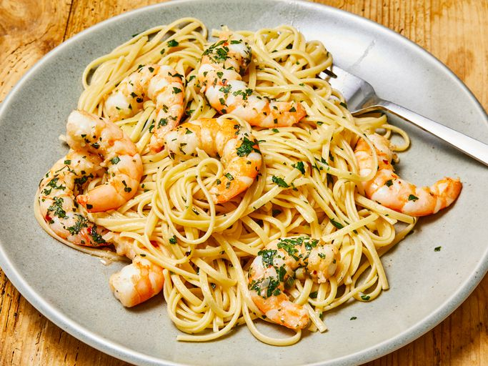

Shrimp Scampi /w Linguine

Description:
A seafood dish made of shrimp cooked in butter and garlic, and served with linguine pasta. 20 minutes of preptime and 20 minutes to cook.
Ingredients
- 1 package of linguine pasta
- 4 tbs butter
- 4 tbs olive oil
- 1 lb of shrimp (peeled)
- 1/2 cup white wine
- 2 shallots (diced)
- 2 garlic cloves (minced)
- Salt and Pepper
Steps
- Gather all ingredients
- Boil a large pot of salted water and cook the linguine in the water for 6-8 minutes (drain after)
- Melt 2 tbs of butter with 2 tbs of olive oil in a skillet
- Cook and stir shallots and garlic in the butter and oil mixture for 3-4 minutes
- Season the shrimp with salt and pepper; add to skillet and cook until pink while stirring occasionally (remove shrimp when cooked)
- Pour white whine into skillet and bring to a boil
- Melt 2 tbs of butter and add olive oil into the mixture
- Toss the linguine and shrimp into the mixture until it is all coated